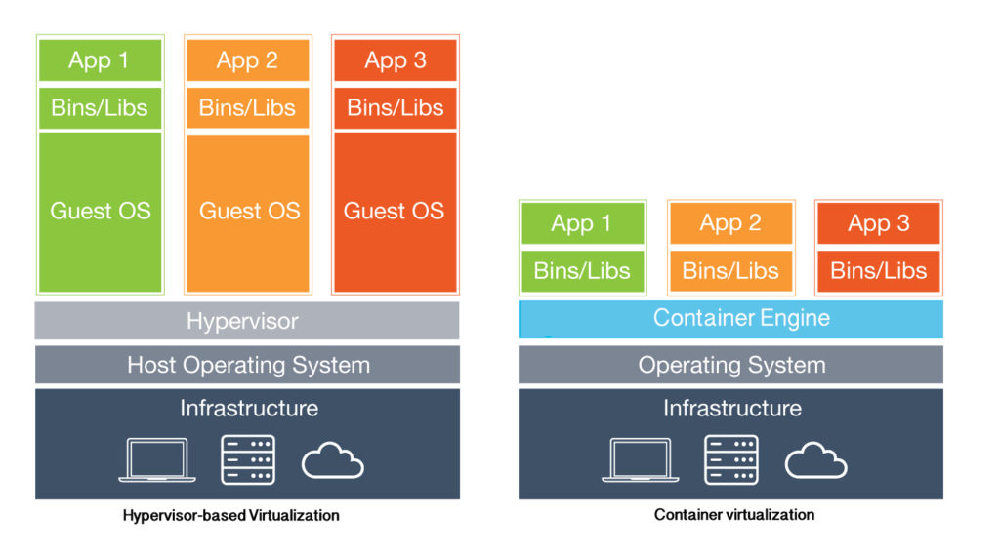

Jenkins/Vagrant/Fabric : transition DevOps
Adrien Sales / Michèle BarréTransformer notre dette en avantage
- Eliminer les parties endettées et coûteuses de notre SI
- Arrêter de parler de "philosophie DevOps" et passer à l'implémentation : le concret
- Eprouver les outils DevOps
- Atteindre le déploiement continu
Build Continu ?... déploiement continu ?
- L'activité du code qui donne le tempo
- Build Continu : on prépare et met à disposition des artefacts en continu (au commit près)
- Déploiement Continu : on déploie les dits artefacts
Comment savoir si on fait du DevOps (1/2)
- On ne fait plus de demande de déploiement : on pousse un Tag
- On ne demande plus à déployer un Job, on déploie du code, une machine (ou tout autre type d'artefact) déja configurée
Comment savoir si on fait du DevOps (2/2)
- On ne déroule plus de procédures d'installation
- On produit des artefacts de manière automatique et transparente, qui se documentent eux-mêmes et sont designés pour être cassés puis reconstruits en continu
Candidat : Synchronisation des annuaires (téléphonie, AD, RH)
Composants principaux :
- IBM TDI (Tivoli Directory Integrator)
- ADLDS (Active Directory Lighweight Directory Services)
Combien de temps pour remonter l'environnement actuel au complet from scratch ?...et depuis une restore ?
Le déploiement doit prendre moins de temps qu'il n'en faut pour décrire les étapes du remontage complet des élements du processus.
IBM TDI
- Uniquement utilisé sur ce processus
- Licence 700.000 FCFP/an pour 2 runs de 20 '/jour
- Déployé sur un serveur Windows dédié, monté et maintenu manuellement
- Pénible à installer/upgrader
- Pas d'investissement en connaissance
1000 FCFP/run en coût de licence TDI uniquement, soit 2000 FCFP/j.
Microsoft ADLDS
- Uniquement utilisé pour ce processus
- Actuellement pénible à installer
- Aucun investissement en connaissance
- Consolide/stocke les données
- Tourne sur un serveur dédié, manuellement monté, sous exploité
Bilan système et financier
- Un serveur dédié qui tourne 24/7 pour deux exécutions quotidennes de 25'
- Un serveur LDAP complet qui tourne pour servir < 10 Mo de données
- Un ETL coûteux, sous-exploité et pas taillé pour une prise en main rapide par des développeurs
Objectif
Implémenter un processus :
- Aisé à prendre en main par des développeurs
- S'appuie sur des composants open source, facilement déployables (voire déja déployés en automatique) et déja exploités
- Déployable via du code sur notre infrastructure, mais également sur des plateformes cloud ou hébergées
- Qui s'intégre nativement dans la chaîne DevOps : build continu et déploiement continu
Trajectoire
Rendre ce développement rapidement exploitable, on ne crée pas un prototype de laboratoire.
Contraintes : mode opératoire
- Coller aux technologies structurantes actuellement maîtrisées,
- les pousser dans leurs limites,
- ouvrir les perspectives vers des technologies plus en rupture apparente avec celles déja utilisées.
Les briques
- L'OS : CentOS 7
- Base de donnée relationelle : PostgreSQL
- Utilisation d'outils de déploiements maîtrisés et exploités tels que Liquibase
- Virtualisation
- Poursuivre dans l'investissement sur Python et industrialiser les tâches/jobs
Outils
Tout est versionné et buildé en continu, pour cela :
- Vagrant
- Jenkins
- Fabric/Python
- Git
Vagrant : l'officialisation
Nous permet de créer et configurer des environnements de développement virtuels en toute autonomie, et via du code.
Jenkins

Jenkins
Moteur d'intégration continue : c'est lui qui va travailler pour nous.
Le petit nouveau
Déployé en protypage sur une Workstation musclée, sur une Fedora 26 (afin de rester dans l'écosystème des rpms)
ben...et Travis ?!
Travis est un outil parfait, cependant, accéder aux composants sur le LAN n'était pas optimal : il nous fallait l'équivalent, chez nous, pour commencer en tout cas.
Vagrant: les grands concepts
- Les boxes
- Le provisioning (shell, puppet, chef, ansible)
- Les Providers (VirtualBox, VmWare, aws)
- La destruction
Vagrant : le coût d'entrée
- Provisioning avec du shell : aucun background puppet ou ansible requis
- Code testé directement sur l'architecture cible sans demander d'environnement d'intégration : ce dernier est monté par le développeur et le bootstrap documente les actions menées
- VirtualBox comme provider sur le poste de dev
- Culture de la construction/destruction : il est sain de régulièrement "tout casser"
La virtualisation : VM, OS puis APP
Python/fabric: l'officialisation
- Python est arrivé à la DSI par le SIG et ses Jobs d'intégration
- Python est utilisé par les dévelopeurs pour automatiser et documenter des tâches répétitives
- Fabric permet de rendre ces scripts documentables notamment dans leur exécution, y compris sur du code complexe.
Fabric
Fabric est à la fois une librairie et un outil de ligne de commande permettant, via ssh, de déployer des applications ou d'effectuer des tâches d'administration système.
Idée
Intégrer cet outil dès le développement de nos jobs afin d'en assurer à la fois un développement cadré mais également des installations et exécutions aisées, via de la configuration automatisable par des briques déja déployées sur notre SI (typiquement puppet).
Fabric et admin système
Fabric permet aussi de lancer des commandes ssh sur des collections de serveurs, mais dans ce cadre, c'est davantage pour ses capacités à lier du code complexe à des tâches simples, documentées et lançables via ssh.
Python ?
Python : packagé pour toutes les plateformes, et sous toutes les formes de packaging, avec un écosystème très complet qui en rend l'exploitation très aisée.
Travis : le disparu ?
Durant ce chantier, de part le besoin d'accéder à des éléments sur notre LAN, nous n'avons pas exploité Travis CI mais nous reviendrons sur ce point très spécifique, particulièrement impactant et très clivant au final.
Montage de la platforme Jenkins
Etapes de devs, composants et leur liens à développer :
Règle de conduite
- On ne stocke rien en local
- On pousse/pompe vers/depuis d'autres services externes
- On part du postulat que les services nécessaires (log, base de données, monitoring, ...) sont fournis par d'autres
On garde la philosophie Travis d'un "contenant" se détruisant totalement après chaque exécution.
Jenkins au boulot : Le Job de synchronisation
- Clone de la repo Git
- Boot de l'image Vagrant
- Installation du job (y compris base de données)
- Exécution du job de synchronisation (ssh)
- Envoi de logs vers des plateformes dédiées
- Récupérer le code retour
- Déclencer un ou des événements suite au code retour, par exemple via un Webhook slack
- Arrêt de la VM
Démos
push vs. pull
- Pull : j'attends quelque chose : je vais chercher
- Push : j'envoie quelque chose pour qu'un traitement se déclenche par exemple
Le Job de synchronisation : démo en manuel
Lancer le job manuellement, à la demande
Le Job de synchronisation : démo en cron
En production, besoin d'exécutions périodiques
Le Job de synchronisation : déploiement continu
Démo d'un run qui démarre tout seul suite à un événement sur du code change sur une branche spécifique
Déploiement continu : objectif atteint
Rappel de toutes les étapes mises en oeuvre et mise en parallèle avec le mode actuel
Les bémols
- Toujours besoin d'un conteneur pour les VMs
- Une VM c'est gros en mémoire/ressources
- La Box utilisée n'est pas maintenue par les infras
- Tourne actuellement sur un PC sous le bureau
Les bémols : le provisioning
Les gains par rapport à aujourd'hui
- Création des VMs à la demande : actuellement 2 serveurs tournent en continu la plupart du temps pour rien et ne se mettent pas à jour
- La Box vagrant utilisée n'est pas maintenue par les infras : il suffit pour cela de créer notre propre template CentOS 7 : nous sommes dans DevOps
Les bémols : le provisioning
Les gains par rapport à aujourd'hui
- On tourne ça sur un PC sous le bureau : on peut provisionner directement sur VSphere, cela se fait via le code : nous sommes dans DevOps
- Une VM c'est gros en mémoire/ressources : d'autres technologies existent, plus économiques mais nécessitent un saut technologique
Difficultés rencontrées
- Pas habitué à gérer des problèmes propres aux distrib rpm : SELinux (rsync between vagrant image and code)
- Mises à jour parfois lentes des vms ou des téléchargement initiaux des boxes
- Il a fallu monter une machine complète avec un OS complet, installer les paquets, configurer Jenkins, ...
Difficultés rencontrées
- Sur jenkins, on clique au lieu de coder les choses
- Quant on veut faire tourner le build sur Travis, les paquets rpm et deb n'ont pas forcément les mêmes noms
Avec Travis c'est "plus facile et plus rapide"
- Tout n'est que code, y compris la configuration du robot
- On a pas besoin de demander des accès à des ressources
- On ne consomme aucune ressource ni sur nos postes ni sur notre infra
Au final ce qui compte, ce n'est pas l'OS sur lequel tourne le job, mais bien que le job tourne.
Ne peut-t-on préparer une petite "image" qui tournerait partout...sur du debian, du CentOS, du Mac, du Windows ou n'importe quel autre système qui saurait récupérer puis exécuter ce type d'artifact ?
Travis chez nous
Travis Enterprise : mais est-ce vraiment ce que nous voulons ?
Mais que fait Travis exactement ?
Comment fait-t-il pour être si rapide ? Détailler la log d'un build Travis (la partie docker)
Virtualisation vs containerization
Vertical Slides
Slides can be nested inside of each other.
Use the Space key to navigate through all slides.
Basement Level 1
Nested slides are useful for adding additional detail underneath a high level horizontal slide.
Basement Level 2
That's it, time to go back up.
Slides
Not a coder? Not a problem. There's a fully-featured visual editor for authoring these, try it out at http://slides.com.
Point of View
Press ESC to enter the slide overview.
Hold down alt and click on any element to zoom in on it using zoom.js. Alt + click anywhere to zoom back out.
Touch Optimized
Presentations look great on touch devices, like mobile phones and tablets. Simply swipe through your slides.
Fragments
Hit the next arrow...
... to step through ...
... a fragmented slide.
Fragment Styles
There's different types of fragments, like:
grow
shrink
fade-out
fade-up (also down, left and right!)
current-visible
Highlight red blue green
Transition Styles
You can select from different transitions, like:
None -
Fade -
Slide -
Convex -
Concave -
Zoom
Themes
reveal.js comes with a few themes built in:
Black (default) -
White -
League -
Sky -
Beige -
Simple
Serif -
Blood -
Night -
Moon -
Solarized
Slide Backgrounds
Set data-background="#dddddd" on a slide to change the background color. All CSS color formats are supported.
Image Backgrounds
<section data-background="image.png">Tiled Backgrounds
<section data-background="image.png" data-background-repeat="repeat" data-background-size="100px">Video Backgrounds
<section data-background-video="video.mp4,video.webm">... and GIFs!
Background Transitions
Different background transitions are available via the backgroundTransition option. This one's called "zoom".
Reveal.configure({ backgroundTransition: 'zoom' })Background Transitions
You can override background transitions per-slide.
<section data-background-transition="zoom">Pretty Code
function linkify( selector ) {
if( supports3DTransforms ) {
var nodes = document.querySelectorAll( selector );
for( var i = 0, len = nodes.length; i < len; i++ ) {
var node = nodes[i];
if( !node.className ) {
node.className += ' roll';
}
}
}
}
Code syntax highlighting courtesy of highlight.js.
Marvelous List
- No order here
- Or here
- Or here
- Or here
Fantastic Ordered List
- One is smaller than...
- Two is smaller than...
- Three!
Tabular Tables
| Item | Value | Quantity |
|---|---|---|
| Apples | $1 | 7 |
| Lemonade | $2 | 18 |
| Bread | $3 | 2 |
Clever Quotes
These guys come in two forms, inline:
“The nice thing about standards is that there are so many to choose from”
and block:
“For years there has been a theory that millions of monkeys typing at random on millions of typewriters would reproduce the entire works of Shakespeare. The Internet has proven this theory to be untrue.”
Intergalactic Interconnections
You can link between slides internally, like this.
Speaker View
There's a speaker view. It includes a timer, preview of the upcoming slide as well as your speaker notes.
Press the S key to try it out.
Export to PDF
Presentations can be exported to PDF, here's an example:
Global State
Set data-state="something" on a slide and "something"
will be added as a class to the document element when the slide is open. This lets you
apply broader style changes, like switching the page background.
State Events
Additionally custom events can be triggered on a per slide basis by binding to the data-state name.
Reveal.addEventListener( 'customevent', function() {
console.log( '"customevent" has fired' );
} );
Take a Moment
Press B or . on your keyboard to pause the presentation. This is helpful when you're on stage and want to take distracting slides off the screen.
Much more
- Right-to-left support
- Extensive JavaScript API
- Auto-progression
- Parallax backgrounds
- Custom keyboard bindings